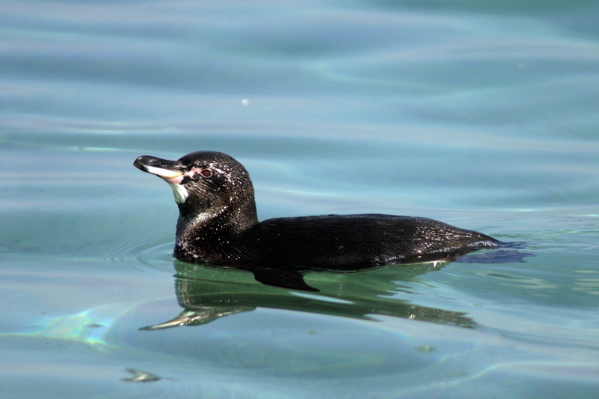

The Galápagos penguin (Spheniscus mendiculus) is a penguin endemic to the Galápagos Islands. It is the only penguin that lives north of the equator in the wild. It can survive due to the cool temperatures resulting from the Humboldt Current and cool waters from great depths brought up by the Cromwell Current. The Galápagos penguin is one of the banded penguins, the other species of which live mostly on the coasts of Africa and mainland South America.
